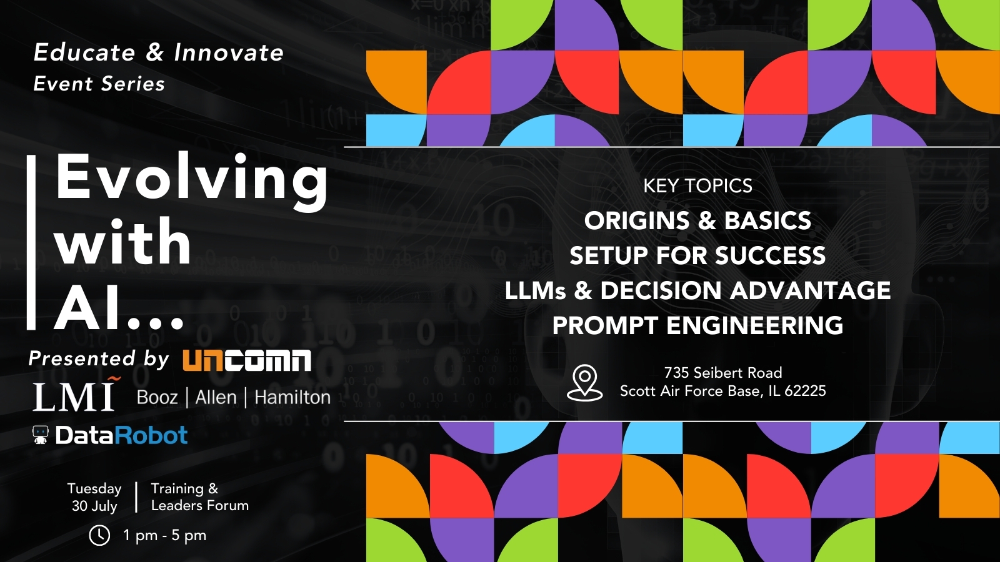
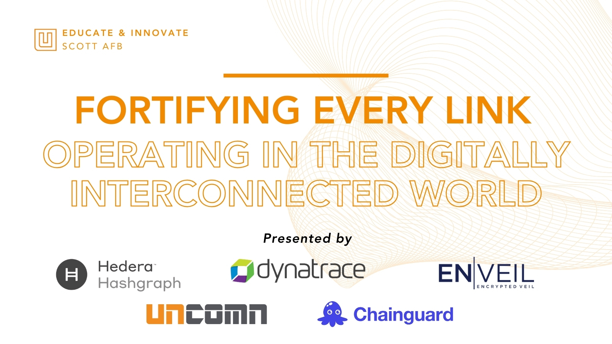
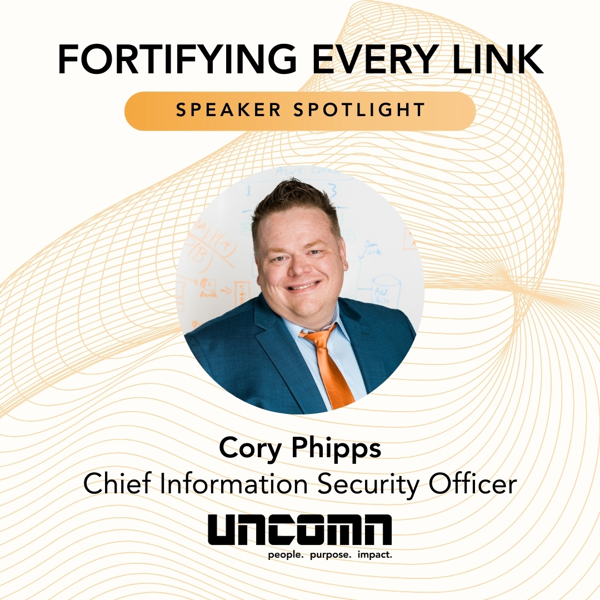
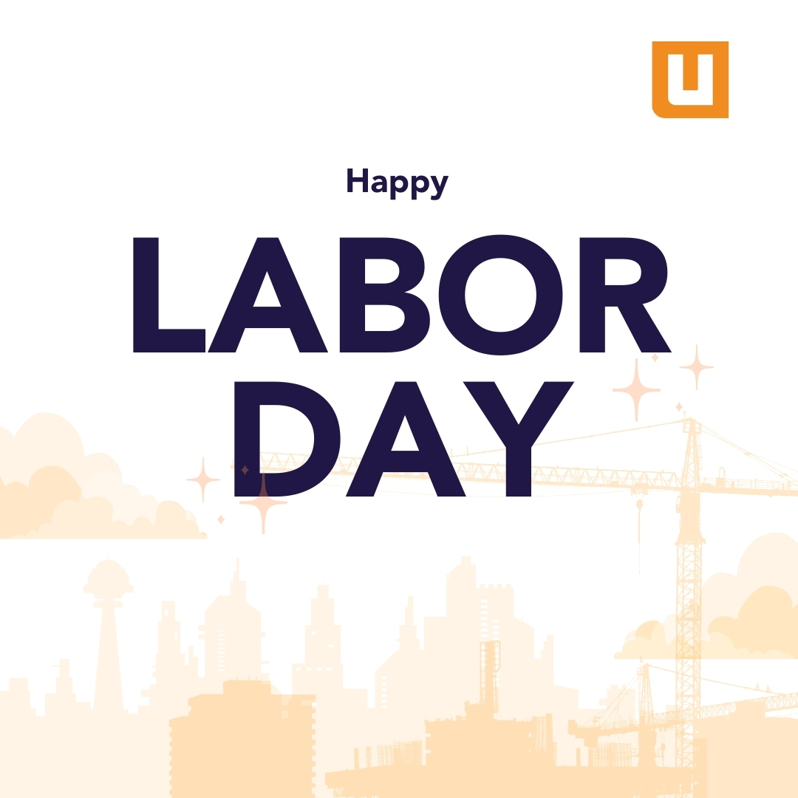
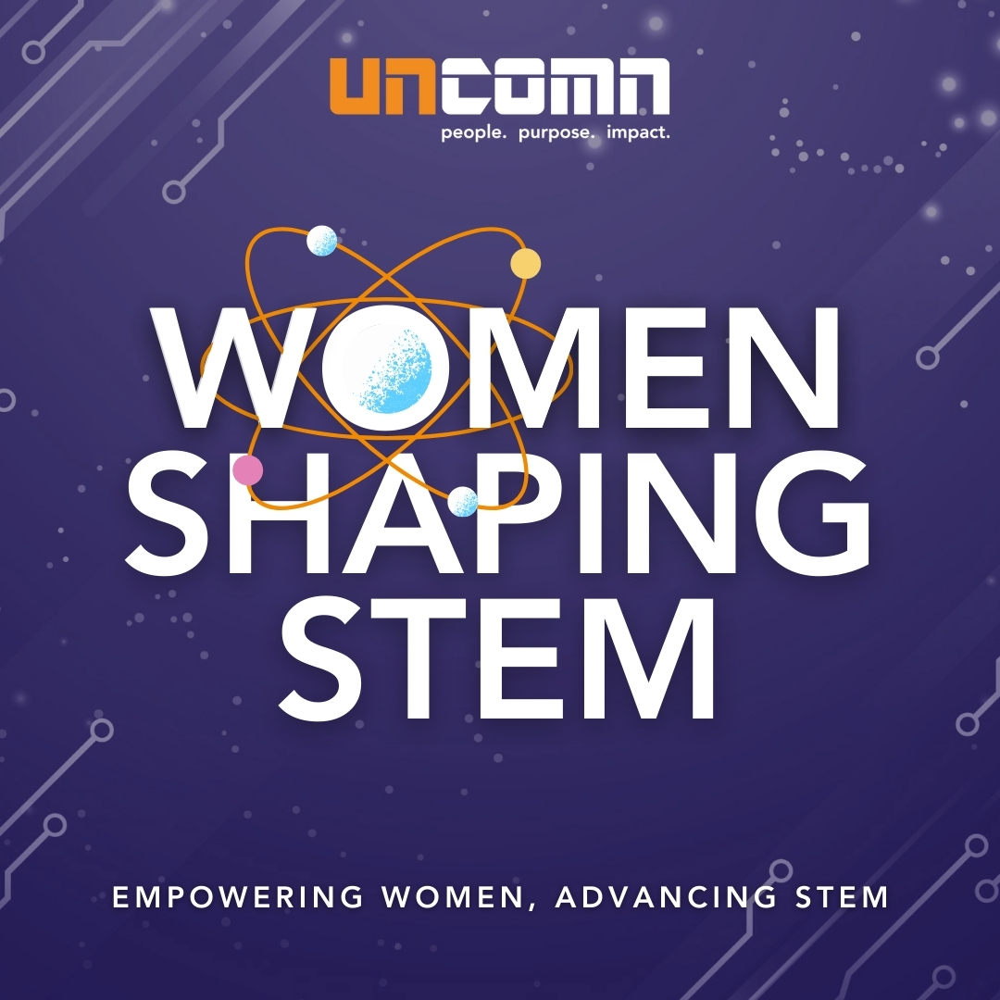
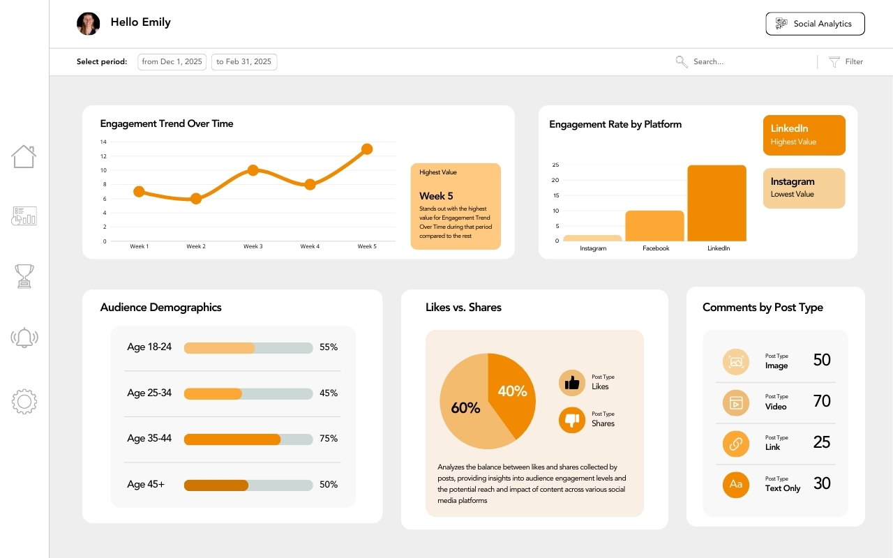
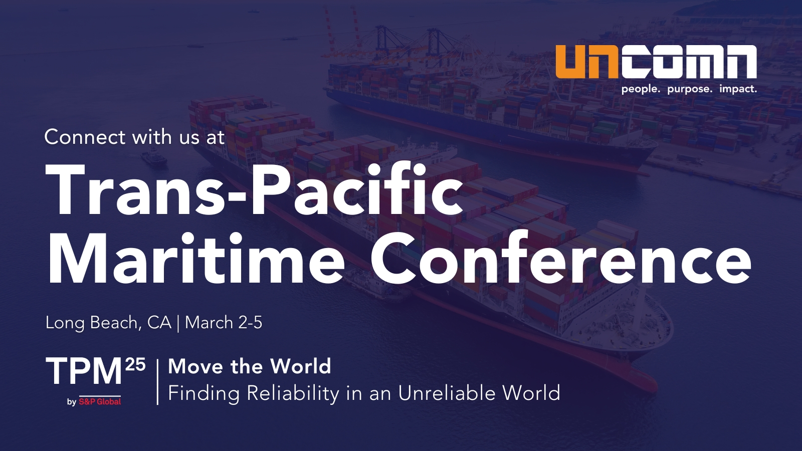
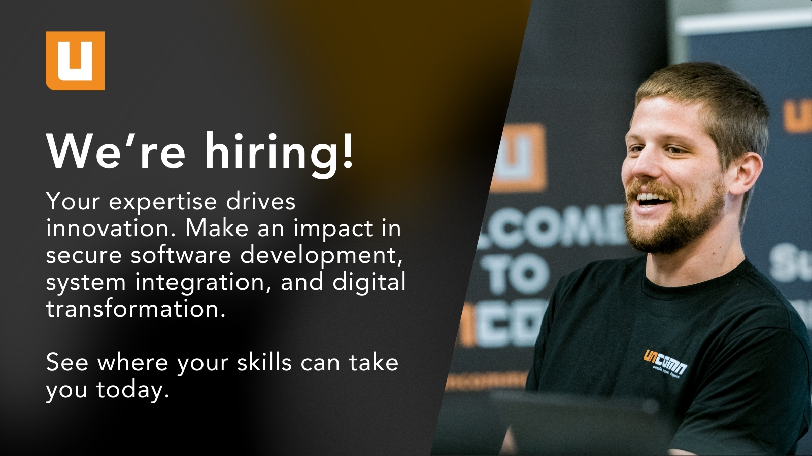

Turning technical IT consulting services into scroll-worthy stories — building a repeatable content engine that drives LinkedIn engagement and thought leadership.
UNCOMN's LinkedIn content was inconsistent and text-heavy. Posts lacked visual identity, there was no editorial calendar, and engagement was flat. The brand's expertise in cloud, cyber, and data wasn't translating to social authority.
I built a quarterly campaign system — editorial calendars, caption frameworks, reusable Canva templates, SME interview prompts, and KPI dashboards. Every post was aligned with industry events and internal milestones.
Analyzed past performance, identified content gaps, and benchmarked against competitors in the GovTech space.
Developed monthly themes tied to UNCOMN's service lines, hiring pushes, and industry events.
Designed reusable graphics, story templates, and carousel formats for consistent LinkedIn presence.
Implemented a content review and approval process via Jira with clear ownership and deadlines.








Increase in homepage retention
Unified identity across platforms